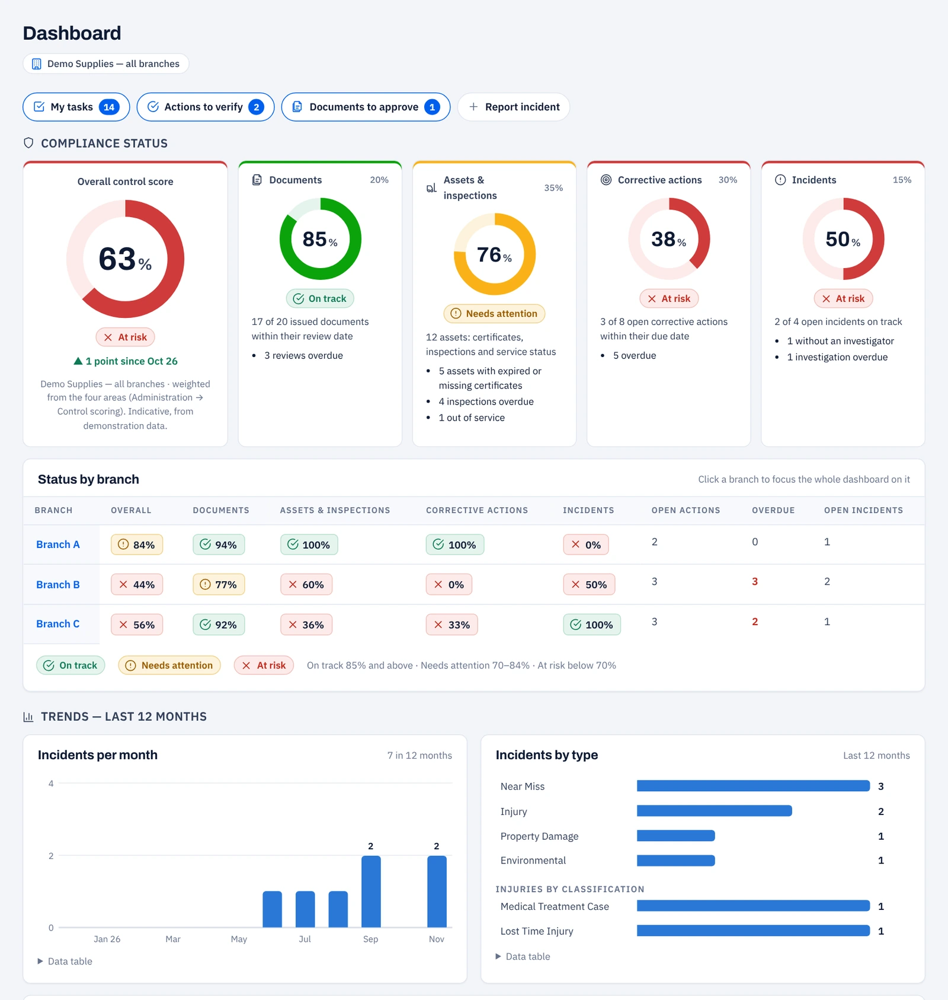
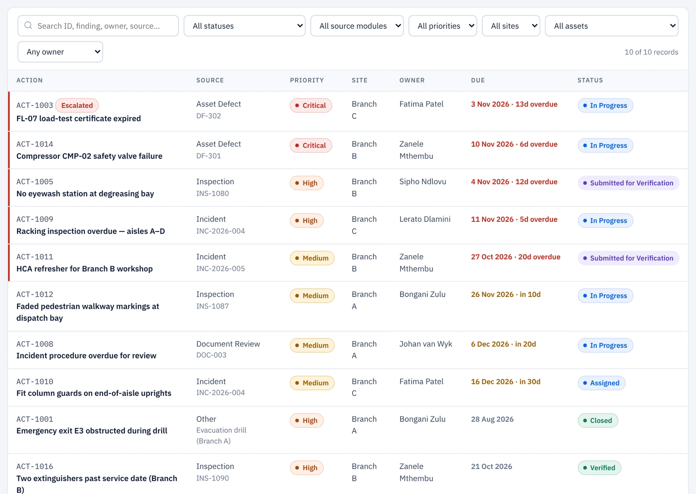
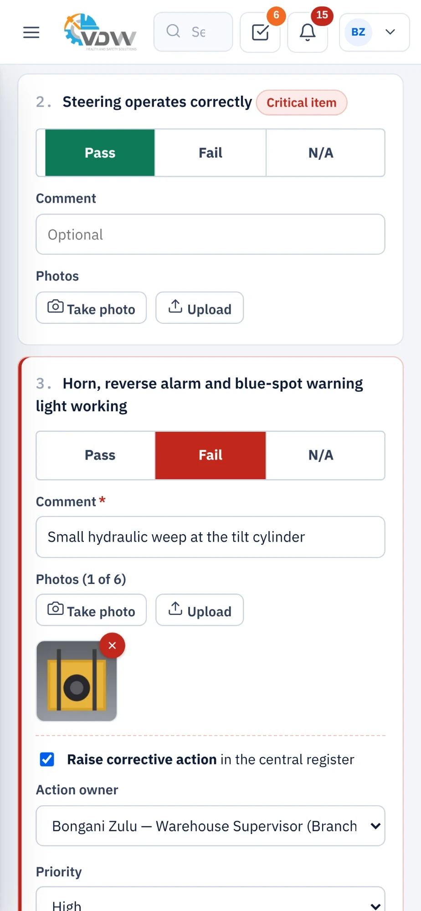
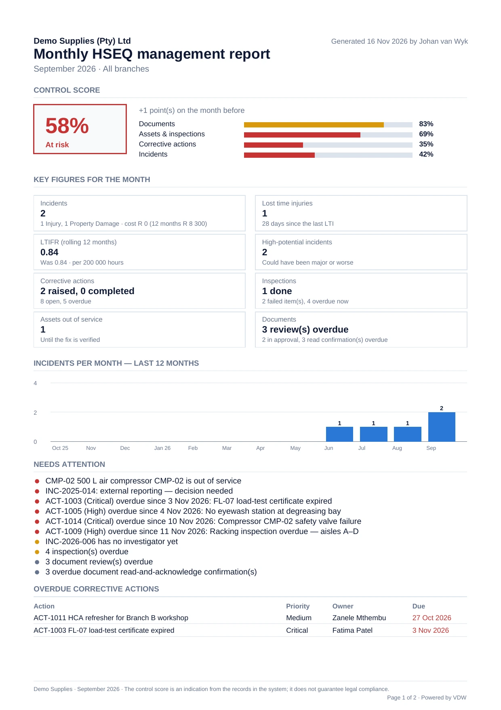
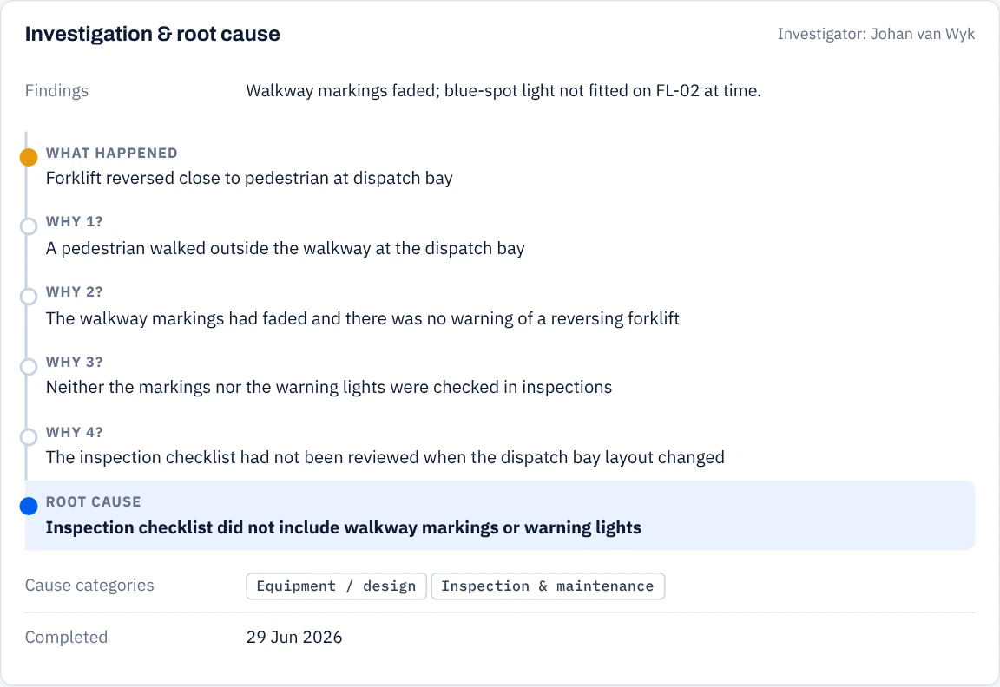

Equipment Suppliers
Supplying equipment and parts to mines, plants and industrial sites.
We Run Your Health & Safety at Every Branch, So You're Always Audit-Ready
Your outsourced safety department. We manage your compliance on our own VDW Compliance Control System: we inspect your branches, keep every document current, track every action and report to your MD each month, so you're ready whenever a client audits you.
Schedule a ConsultationNo obligation · Monthly support · Works alongside your team
Built for suppliers to industrial & mining clients

The old way is a big clean-up before each client audit, then months of drift: appointments expire, inspections are skipped at some branches, and actions stay open. Head office only notices when the next audit comes. Hiring a full safety team for every branch is expensive. We take that ownership: we manage every branch on our system, every month, and give leadership a clear report.
Let Us Manage ItSupplying equipment and parts to mines, plants and industrial sites.
Distributing products to industrial clients from several branches.
Hiring out equipment to clients who audit their suppliers.


Consistent oversight
Every asset carries a QR label, and inspections are done on the phone with photos and signatures, even without signal. A failed item becomes a defect with a corrective action, and critical equipment is taken out of service until the fix is verified. We keep every branch's documents current and follow up every action until it's closed.
Schedule a ConsultationVisibility for leadership
The dashboard shows a control score, 12-month trends for incidents, lost-time injuries and corrective actions, and a comparison between branches. Each month leadership also receives a management report. No more asking around, and no surprises in the next client audit.
See How Reporting Works

Ready when clients audit
When a client announces an audit, we help you prepare, and we keep your documents current on the contractor compliance platforms your clients require, such as HSEC Online, Passport360 and ComplyWorks. When an incident happens, it's reported on the phone with photos, and we investigate it to the real root cause, take signed witness statements and make sure every action is closed before the incident is. You get priority support and WhatsApp reminders in between.
Schedule a Consultation“Niel is our health and safety consultant and one of the most dependable service providers we work with. He's sharp, dedicated and easy to deal with, and he delivers properly and on time. His advice is practical and grounded in how an industrial business actually runs, and his support on our quality systems has added real value beyond the core safety work. I'd recommend him without hesitation.”
Assets inspected on the phone with photos and signatures, even without signal.
Documents approved, issued, reviewed on time and read and signed by the right people.
Incidents reported on the phone and investigated to the real root cause.
Every action has an owner and due date, and is checked by someone independent.
Control score, incident and LTI trends, and a comparison between branches.
Your documents kept current on HSEC Online, Passport360 and ComplyWorks and similar platforms.
We do the heavy lifting from the first month.
We discuss your branches, your clients' requirements and what support you need.
We assess each branch, bring it onto our system and set up the plan and schedule.
We run your compliance on our system: inspections, upkeep and MD reports, all year.
We act as your outsourced safety department across all your branches. We've seen what happens when compliance has no owner, so we take ownership: we run it on our own VDW Compliance Control System and keep every branch ready for the next client audit.
You get consistent, expert oversight across all branches without the cost of full-time staff at each site. We also bring experience from many companies and audits.
We agree a visit schedule per branch based on size and risk, combining on-site inspections with remote support. We work nationwide.
Your control score, incidents and lost-time injuries with 12-month trends, inspection findings, open and overdue corrective actions, and a comparison between branches, in one clear report for leadership.
Yes. Client audit preparation is part of the partnership. We help you get the documents and branches in order before the auditor arrives.
Yes. Many industrial and mining clients require their suppliers to keep documents up to date on platforms such as HSEC Online, Passport360 and ComplyWorks before working at their sites. We upload and update your documents on those platforms for you, so you stay approved.
Very little. Branch managers and supervisors use the system on their phones to do inspections, report defects and incidents, and read and sign documents, and each sees only their own branch. We handle the rest.
Free consultation · Monthly support
Every month without consistent oversight is another month for gaps to grow across your branches. Get expert support and a clear monthly view of where you stand.
No obligation · Practical findings · Or email niel@vdwsafety.com